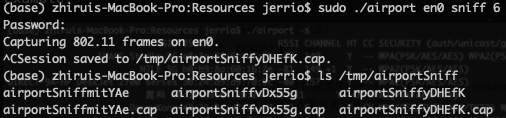
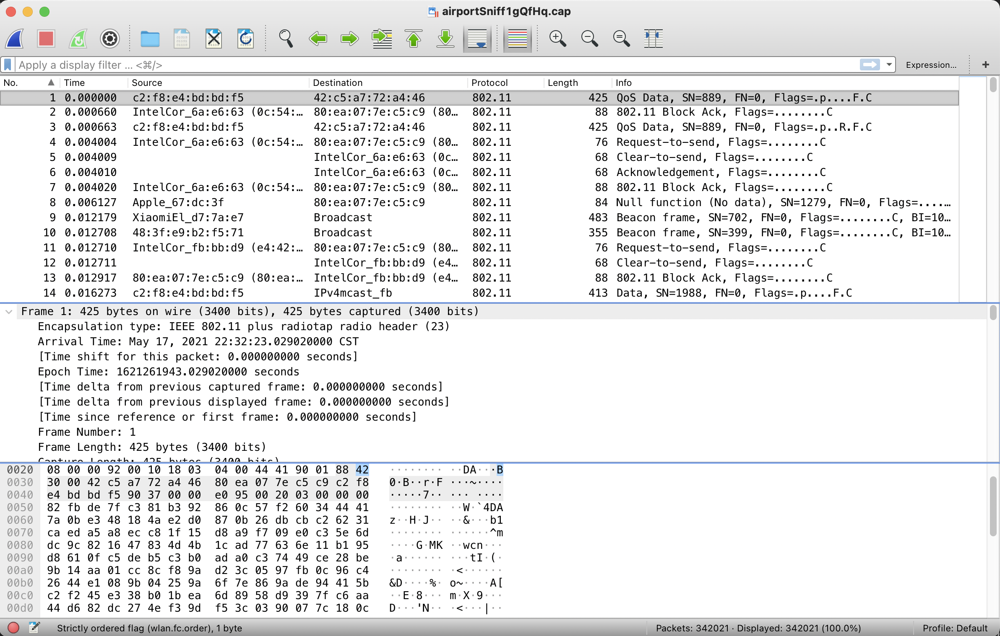

在 Mac 上监听局域网中的数据包
许多Mac OS X用户对Mac缺乏复杂的网络分析工具感到遗憾，这些工具在Linux系统上普遍存在。许多人不知道的是Mac OS X附带了一个内置的命令行工具，可以对Wi-Fi网络进行各种的操作，从数据包捕获（流量监听）到扫描附近网络的信噪比。Airport是Apple IEEE 802.11专用框架的一部分，该框架用于为Mac的Airport菜单栏图标提供动力。
环境
实验环境：macOS Big Sur (Version 11.2.3)
工具：Wireshark + AirPort Utility
AirPort:
许多Mac OS X用户对Mac缺乏复杂的网络分析工具感到遗憾，这些工具在Linux系统上普遍存在。许多人不知道的是Mac OS X附带了一个内置的命令行工具，可以对Wi-Fi网络进行各种的操作，从数据包捕获（流量监听）到扫描附近网络的信噪比。Airport是Apple 80211专用框架的一部分，该框架用于为Mac的Airport菜单栏图标提供动力。
1. 安装 Wireshark
（略）
2. 查看需要监听的信号频道
查看2.4GHz或5GHz的信道(channel)和宽度(频宽)
1 | ./airport -s |
Example:

2. 选择频道进行监听
比如使用en0网卡监听频道6:
1 | sudo ./airport en0 sniff 6 |
如果命令行找不到airport命令，执行下面这段代码配置软链接，或者进入airport目录操作。
1 | sudo ln -s /System/Library/PrivateFrameworks/Apple80211.framework/Versions/Current/Resources/airport /usr/sbin/airport |
监听结束后默认会在/tmp生成.cap数据包。

3. 使用Wireshark打开数据包

最后，使用Wireshark打开数据包，开始尽情分析数据吧~
这篇文章介绍了如何解析802.11协议包->How to Decrypt 802.11